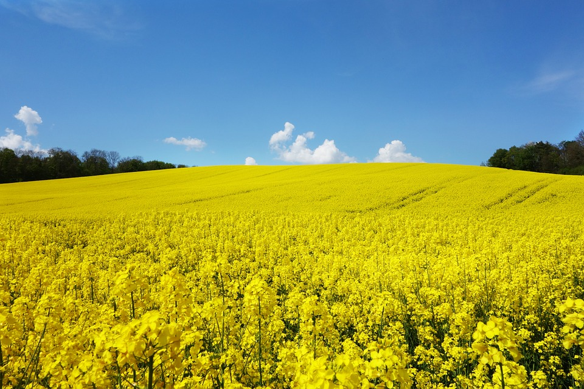

Šlechtění a osiva
Slapy u Tábora
Pracoviště SEMPRA PRAHA zaměřené především na řepku a len. Na jednom místě najdete ověřené profily odrůd i přímé spojení na stanici.

Zaměření stanice
Polní plodiny
Stanice je kontaktním místem pro informace o odrůdách řepky jarní, lnu olejného a kmínu kořenného.
01
Řepka jarní
Odrůdy Sázava a Lužnice jsou vedeny v oficiálních odrůdových přehledech ÚKZÚZ.
02
Len olejný
Žlutosemenná odrůda Jantar je udržována společností SEMPRA PRAHA.
03
Kmín kořenný
Prochan a Rekord patří mezi dvouleté odrůdy sledované ÚKZÚZ.
Portfolio
Odrůdy spojené se Slapy
Dostupnost, kategorii osiva, balení a aktuální cenu vždy potvrďte přímo u stanice.
Kontakt
Šlechtitelská stanice Slapy
| Adresa | Slapy 39, 391 76 Slapy u Tábora |
|---|---|
| Telefon | +420 381 278 058 |
| sempra.slapy@mybox.cz | |
| Provozovatel | SEMPRA PRAHA a. s., IČO 45797439 |
Kontakt je uveden také v aktuálním adresáři firem publikovaném v materiálech ÚKZÚZ ↗.
Poptávka osiva
Do zprávy uveďte odrůdu, požadované množství, kategorii osiva a termín odběru.
Napsat do Slap →